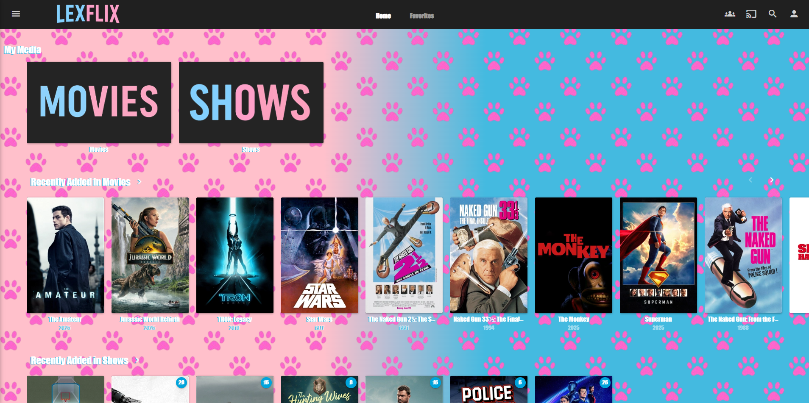
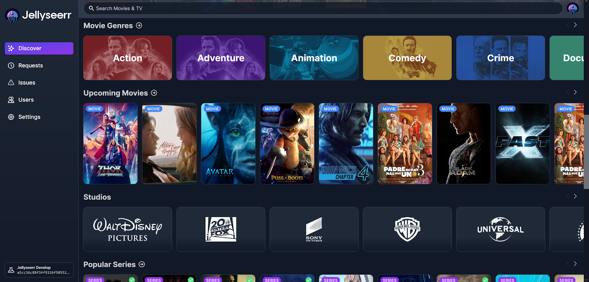
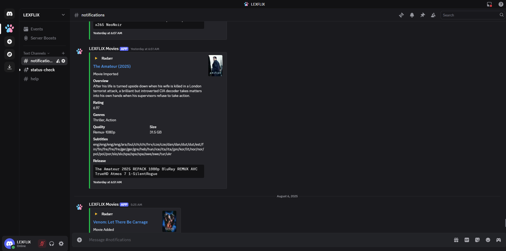

TWO-STEP VERIFICATION
There is a chance you will have to use your email for a one time passcode. This should only be required every once in a while.

LEXFLIX
LEXFLIX is your personal streaming service. It lets you watch all the movies, shows, and music that have been added to your home library. You can log in from your computer, phone, or TV and play anything you have access to, just like you would with Netflix or Hulu.
Go to the Jellyfin website, phone or TV app.
Log in with your username and password.
Browse or search for any movie, or show
Click play to start watching!

Jellyseerr
Jellyseerr is the place where you can ask for new movies or shows to be added to the library. If there’s something you want to watch that isn’t there yet, just log into Jellyseerr, search for it, and request it. You’ll get a notification or see when it’s ready to watch in LEXFLIX.

Discord
Discord is the app that will send you important notifications about your media library. For example, you might get a message when a movie you requested is available or if there’s something you need to know about your access. Just install the app on your phone to get these updates and click the link below to join the server:
